Aftermovie
21.9.2025 - Posledný pretek tejto sezóny sa konal v Partizánskom na pre mňa známych Baťových trailoch. Bolo to už štvrté podujatie ktorého som sa tu zúčastnil a na pretek som sa veľmi tešil. Organizátori sa snažia pripraviť každý rok niečo nové a bolo tomu tak aj tento rok. Niekoľko týždňov dopredu nás teazovali prekvapením a tesne pre pretekmi zverejnili mapu, kde chýbala jedna RS. Až tesne pred tréningom zverejnili komplet mapu s novou RS a komentárom:
'Kamošky a kamoši! Tu je komplet mapa pretekov aj so sľúbenou novou RS. Vraj je celá off-camber (odklopená) a končí na cintoríne, tak si dávajte pozor!'
RS1 v tréningovom tempe sa mi išla veľmi dobre aj s prechodom cez skalu v hornej časti a rýchlym prejazdom bike parkovej časti. Nič nenasvedčovalo tomu, k čomu sa schyľovalo na RS2 aj keď sa o nej šírili medzi jazdcami informácie, že je to zabiják. Hneď po cca 100 metroch bol prvý ťažký úsek, kde po strmom zráze medzi kameňmi nasledovala zákruta vľavo. Bike som zložil mimo trate do lístia a pozrel si ako to idú iný jazdci - skúsení a aj tí menej zdatní. Niektorí to dali na pána, iný na brzdách a niekoľko z nich aj na pešo popri bicykli. Môj prejazd prvej polovice na brzdách a bez veľkých očakávaní vyzeral fajn (pozri galériu), ale potom zrejme pri pokuse zatočiť doľava som zrazu letel cez riadidlá a bolo po pretekoch. Dopadol som priamo na hlavu, ako pri hlavičke do vody, a skončil v lístí mimo trate. V galérí sú z toho pekné fotky - teda z tej prvej časti prejazdu pred pádom. Dosť dlho trvalo kým som sa pozbieral, ale po chvíli váhania či pokračovať som to vzdal a zišiel RS3-kou dole, zbalil si veci a išiel domov. Ešte aj 10 dní po páde cítim bolesť v krku, ale treba povedať, že som dopadol veľmi dobre na to aký to bol pád.
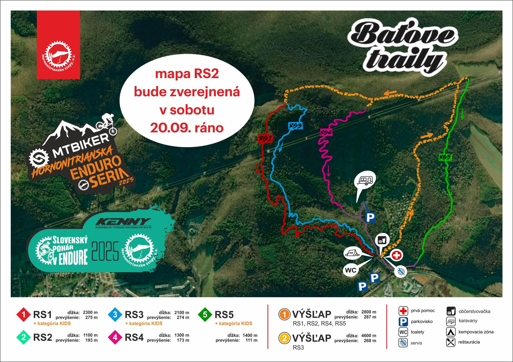
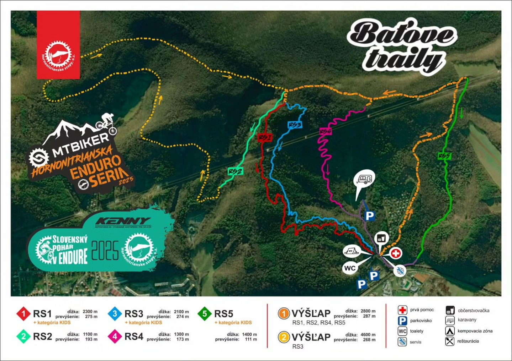
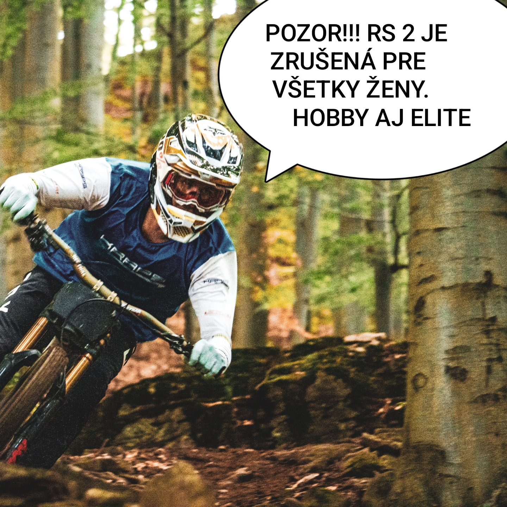
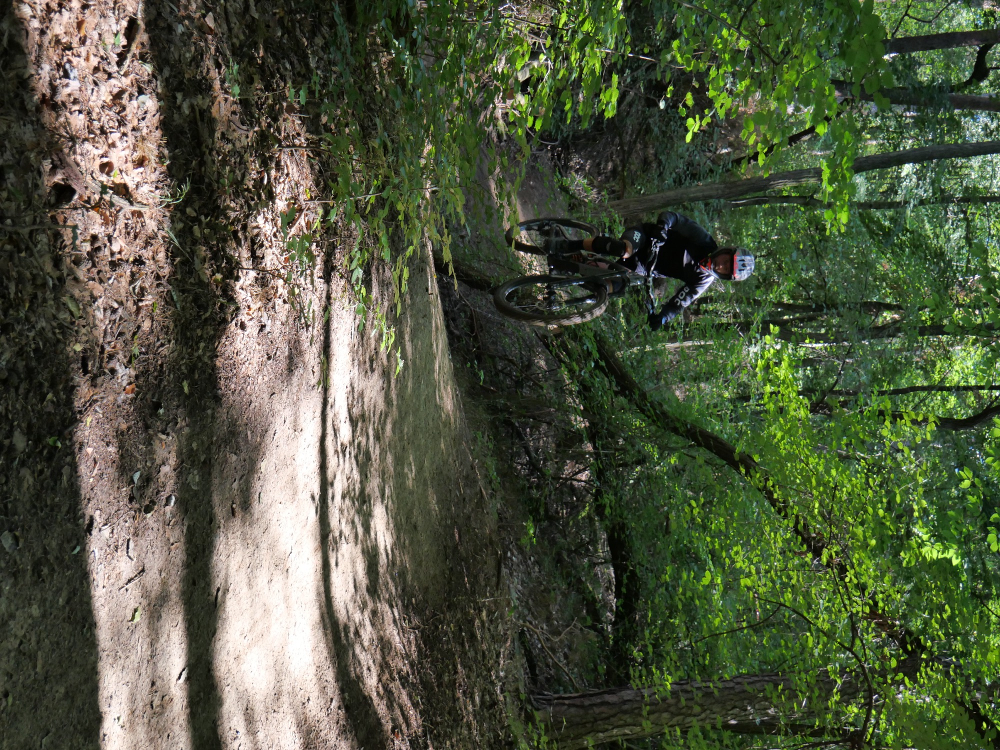
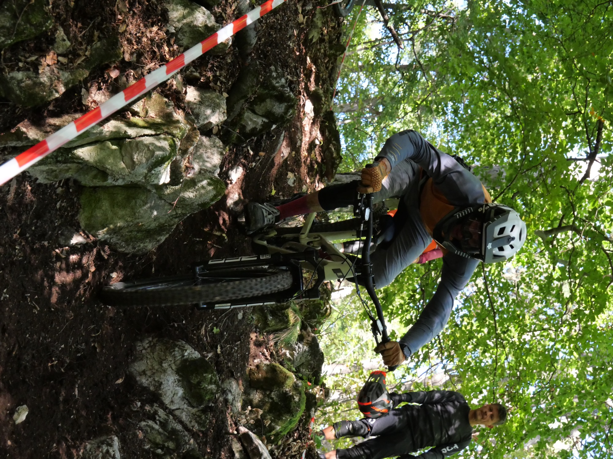
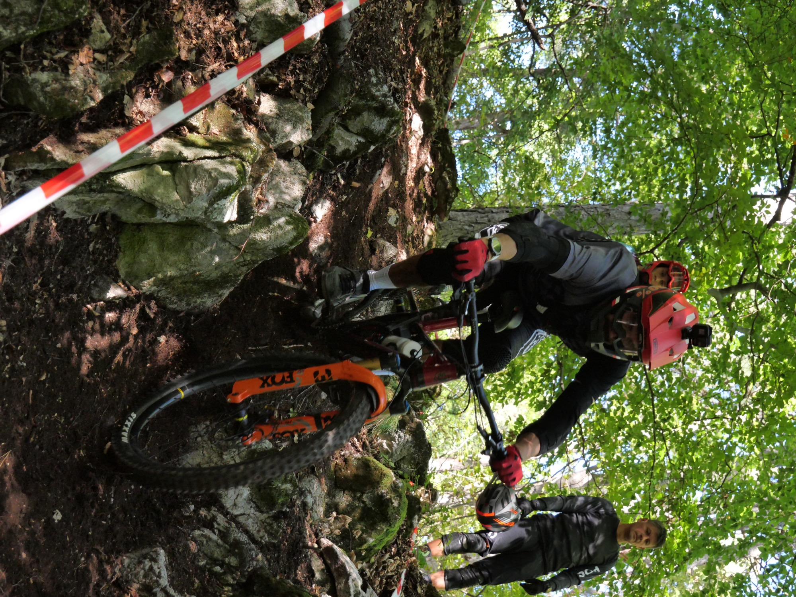
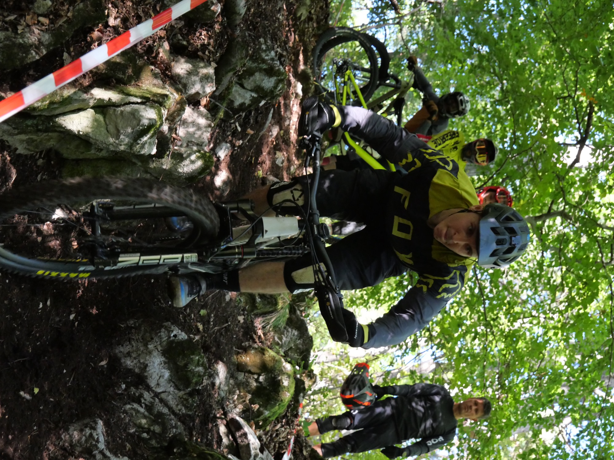
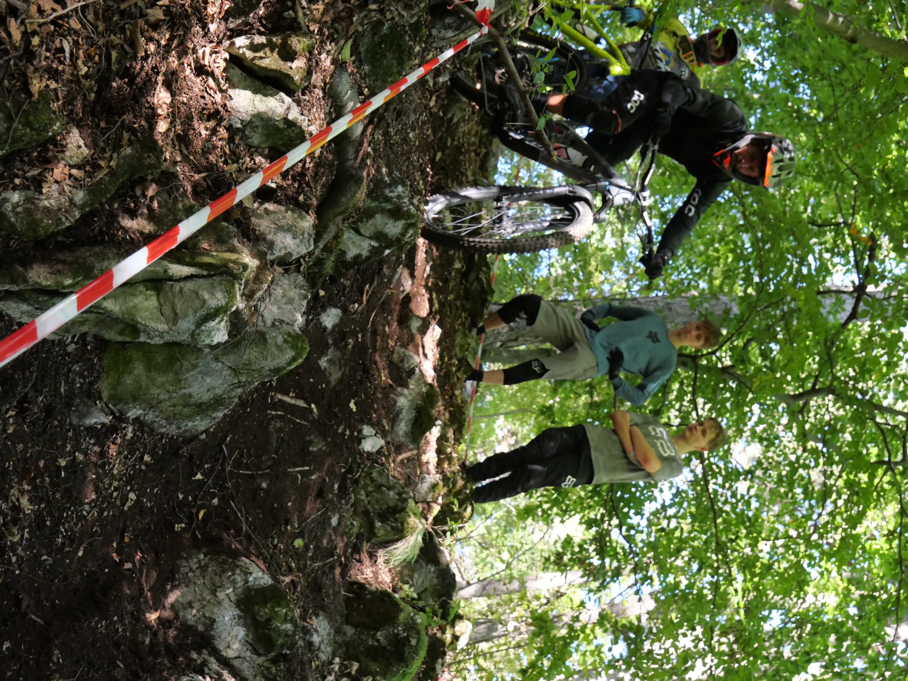
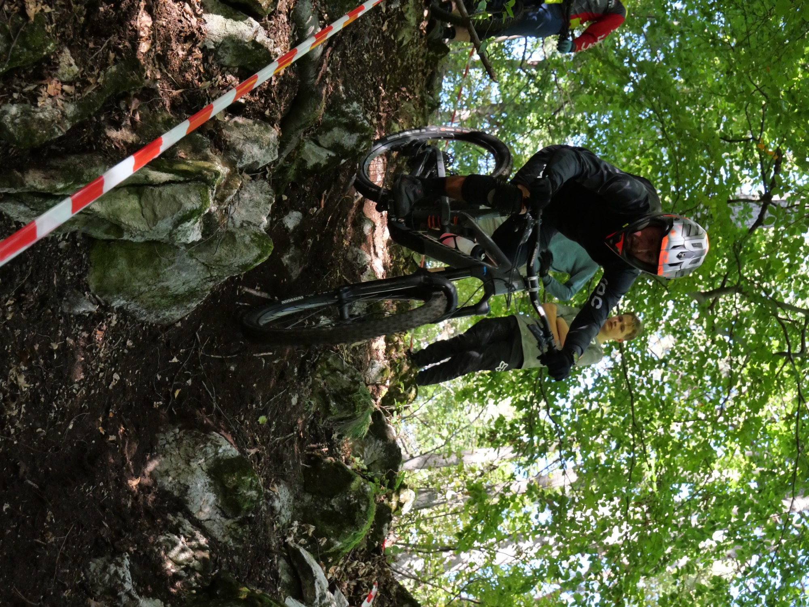
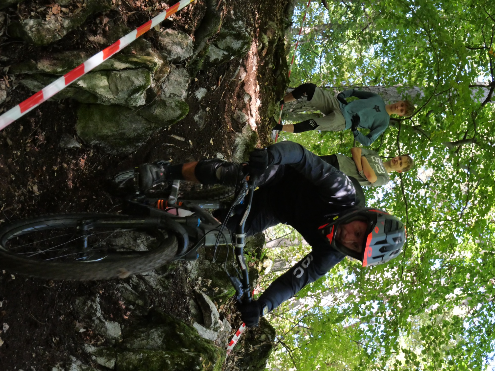
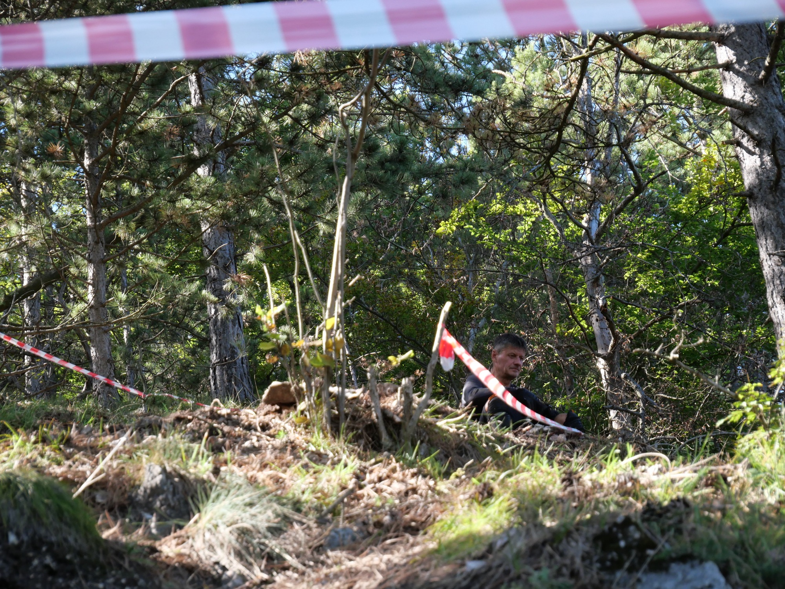